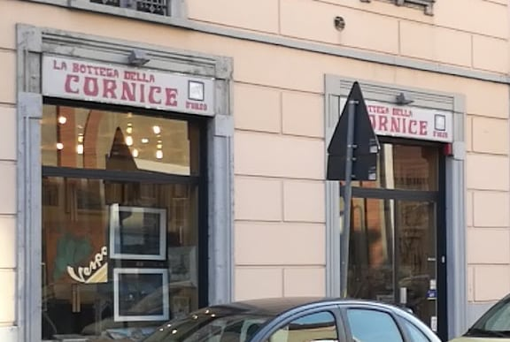

Corniciaio · Via Asiago 4, Gorla, Milano
L'angolo giusto.
Per una laurea, una stampa, un puzzle, uno specchio, una cornice antica da rimettere in sesto. Si sceglie insieme dal muro dei campioni d'angolo: l'asta, il passepartout, il vetro. Poi in bottega si taglia a quarantacinque gradi e si monta.
Orari in bottega
Il muro dei campioni d'angolo: noce, oro, argento, nero, bianco, legno naturale. La cornice si sceglie da qui.
cosa arriva in bottega
Otto cose che i clienti portano qui.
Sono quelle che raccontano nelle recensioni: ognuna ha la sua cornice, e per ognuna c'è un consiglio su modello e colore, se lo volete.
- 01
Lauree e titoli
Da incorniciare, e da scorniciare se dovete portarli via. Per un'urgenza, avvisate prima.
- 02
Stampe e fotografie
Con il passepartout giusto. Anche stampe e tessuti giapponesi.
- 03
Quadri e opere
Per chi dipinge, per chi colleziona, per chi le espone.
- 04
Il disegno dei bambini
Vale una cornice vera, come un quadro.
- 05
Il puzzle finito
Fissato e incorniciato, così resta com'è.
- 06
Lo specchio su misura
Con la cornice classica, in foglia oro o argento.
- 07
La cornice antica
Rotta, scheggiata, da rimettere in sesto: si restaura, con un preventivo prima.
- 08
Per l'ufficio e la galleria
Serie di quadri per l'azienda, opere per la mostra: si fa un preventivo.
come si fa
Quattro tagli, quattro passi.
Una cornice sono quattro aste tagliate a quarantacinque gradi che si uniscono sugli angoli. Il lavoro si fa così, e si fa qui, nel laboratorio dietro le vetrine.
- Portate l'opera
O le misure, se non ce l'avete ancora: si guarda insieme cosa merita e come.
- Si sceglie dall'angolo
L'asta dal muro dei campioni, il passepartout, il vetro. Con un suggerimento su modelli e colori, se lo chiedete.
- Si taglia e si monta in bottega
Quattro tagli a quarantacinque gradi, gli angoli uniti, il vetro pulito, il retro chiuso.
- Si ritira
Con l'attaccaglia già montata e la targhetta della bottega sul retro: via e telefono, per la prossima volta.
Per chi lavora con l'arte. Gallerie, artisti, fotografi, uffici: taglio di cartoni e passepartout anche da file vettoriale, preventivo per le serie e per gli allestimenti.
Il retro: l'attaccaglia e la targhetta della bottega Una stampa in legno chiaro, fotografata da chi l'ha ritirata
le voci
Cosa scrivono.
Nelle 42 recensioni Google con un testo, 30 parlano di professionalità, 13 dei consigli sulla scelta, 12 di prezzi onesti. Fra chi scrive c'è un critico e gallerista, chi ha fatto incorniciare i quadri dell'azienda, chi ha portato una cornice antica rotta. Il titolare risponde a 47 recensioni su 63, quasi sempre con due parole: grazie mille.
4,863 recensioni su Google
«uno dei pochi artigiani corniciai ancora presenti a Milano»
Da una recensione Google
dove e quando
Via Asiago 4, Gorla.
A due passi dal Naviglio della Martesana: due vetrine con l'insegna rossa, il laboratorio dietro.
- Sabato solo la mattina; pausa dalle 13 alle 14 negli altri giorni.
- Per un'urgenza, una telefonata prima di passare.
- Lavori grandi o in serie: si concorda con un preventivo.
| lunedì | 08:30–13:00 · 14:00–18:00 |
| martedì | 08:30–13:00 · 14:00–18:00 |
| mercoledì | 08:30–13:00 · 14:00–18:00 |
| giovedì | 08:30–13:00 · 14:00–18:00 |
| venerdì | 08:30–13:00 · 14:00–18:00 |
| sabato | 08:30–13:00 |
| domenica | chiuso |
La mappa è di Google: aprendola, Google riceve il tuo indirizzo IP e può usare i suoi cookie.

Le domande che ci fanno.
Fate cornici su misura?
Sì: si sceglie insieme l'asta dal muro dei campioni d'angolo, il passepartout e il vetro, poi in bottega si taglia a quarantacinque gradi e si monta. Per quadri, stampe, fotografie, lauree, puzzle e disegni.
Restaurate cornici antiche?
Sì: cornici vecchie rotte o scheggiate si rimettono in sesto in bottega, con un preventivo prima di cominciare.
Fate specchiere su misura?
Sì: specchi su misura con la cornice che preferite, anche classica in foglia oro o argento.
Incorniciate un puzzle?
Sì: il puzzle finito viene fissato e incorniciato, così resta com'è.
Quanto ci vuole?
Dipende dal lavoro e da quanti ce ne sono in coda: si concorda quando portate l'opera. Per un'urgenza, avvisate prima con una telefonata: 02 257 0385.
Quali sono gli orari?
Dal lunedì al venerdì dalle 8:30 alle 13 e dalle 14 alle 18; il sabato dalle 8:30 alle 13. Domenica chiuso.